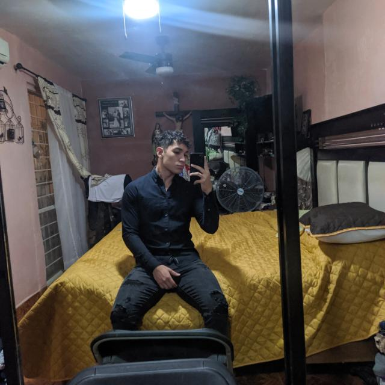
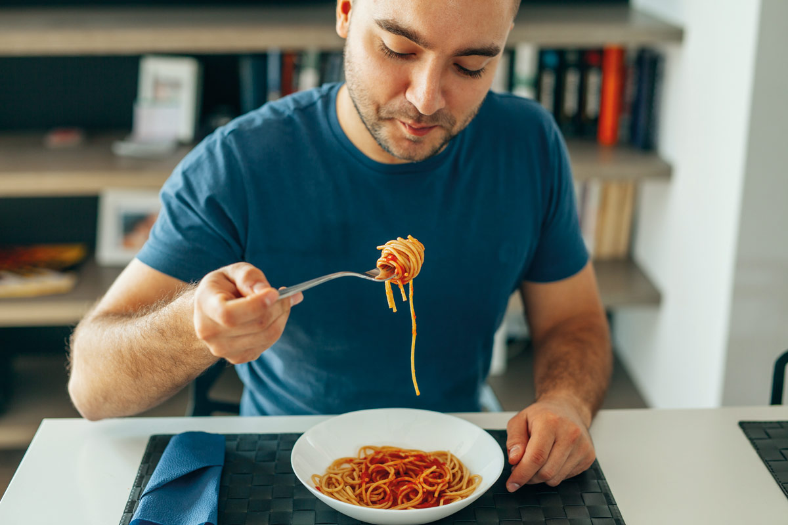

Mi nombre es Andres Martinez, tengo 19 años, mido 1.82, soy muy alegre y divertidoo:).

Mi nombre es Andres Martinez, tengo 19 años, mido 1.82, soy muy alegre y divertidoo:).
Uno de mis pasatiempos favoritos es Jugar futbol porque desde pequeño siempre me ha gustado.
Otro de mis pasatiempos es hacer ejercicio en el gimnasio por temas de salud.

Tambien me gusta mucho el jugar videojuegos para pasar el rato.

Y por ultimo otro de mis pasatiempos favoritos es comer.
Mi pelicula favorita es cars